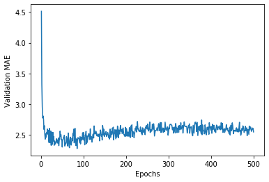
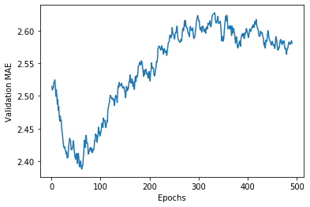

波士顿房价预测
Boylad · 2019-11-26
波士顿房价数据集包含20世纪70年代中期波士顿郊区犯罪率、财产税率等13个feature，target是住房价格的中位数，单位：千美元。其中，训练集404个sample，测试集102sample，feature之间的量纲有差异。feature如下：
1. Per capita crime rate.
2. Proportion of residential land zoned for lots over 25,000 square feet.
3. Proportion of non-retail business acres per town.
4. Charles River dummy variable (= 1 if tract bounds river; 0 otherwise).
5. Nitric oxides concentration (parts per 10 million).
6. Average number of rooms per dwelling.
7. Proportion of owner-occupied units built prior to 1940.
8. Weighted distances to five Boston employment centres.
9. Index of accessibility to radial highways.
10. Full-value property-tax rate per $10,000.
11. Pupil-teacher ratio by town.
12. 1000 * (Bk - 0.63) ** 2 where Bk is the proportion of Black people by town.
13. % lower status of the population.
加载数据集：
import numpy as np
import matplotlib.pyplot as plt
from tensorflow.keras import models
from tensorflow.keras import layers
from tensorflow.keras import backend as K
from keras.datasets import boston_housing
(train_data,train_targets),(test_data,test_targets) = boston_housing.load_data()
首先对数据做标准化处理，使用训练集的均值和标准差标准化测试集数据：
mean = train_data.mean(axis=0)
train_data -= mean
std = train_data.std(axis=0)
train_data /= std
test_data -= mean
test_data /= std
因为这是一个回归问题，因此输出层的维度设为1，没有激活函数意味着它是线性层，损失函数用均方误差(Mean Squared Error, MSE)。平均绝对误差(Mean Absolute Error, MAE)作为模型的评价指标。因为需要将同一个模型多次实例化，所以用一个函数开构建模型。
def build_model():
model = models.Sequential()
model.add(layers.Dense(64, activation='relu',
input_shape=(train_data.shape[1],)))
model.add(layers.Dense(64, activation='relu'))
model.add(layers.Dense(1))
model.compile(optimizer='rmsprop', loss='mse', metrics=['mae'])
return model
由于我们的数据量很小，验证集的划分对模型的训练影响可能比较明显。因此在这里我们采用4折交叉验证，使模型更具Robust。模型在验证集上的MAE是4折MAE的平均值。交叉验证时，我们保存每个Epoch验证集的MAE。
k = 4
num_val_samples = len(train_data) // k
num_epochs = 500
all_mae_histories = []
for i in range(k):
print('processing fold #', i)
val_data = train_data[i * num_val_samples: (i + 1) * num_val_samples]
val_targets = train_targets[i * num_val_samples: (i + 1) * num_val_samples]
partial_train_data = np.concatenate(
[train_data[:i * num_val_samples],
train_data[(i + 1) * num_val_samples:]],
axis=0)
partial_train_targets = np.concatenate(
[train_targets[:i * num_val_samples],
train_targets[(i + 1) * num_val_samples:]],
axis=0)
model = build_model()
history = model.fit(partial_train_data, partial_train_targets,
validation_data=(val_data, val_targets),
epochs=num_epochs, batch_size=1, verbose=0)
mae_history = history.history['val_mae']
all_mae_histories.append(mae_history)
processing fold # 0
processing fold # 1
processing fold # 2
processing fold # 3
all_mae_histories是长度为4的列表，其每个元素是长度为500的列表。average_mae_history是每个Epochs上4折MAE的平均。可视化如下：
average_mae_history = [
np.mean([x[i] for x in all_mae_histories]) for i in range(num_epochs)]
plt.plot(range(1, len(average_mae_history) + 1), average_mae_history)
plt.xlabel('Epochs')
plt.ylabel('Validation MAE')
plt.show()

因为前10个Epochs的Validation MAE值比较极端，剔除前10个值后，将每个点替换为先前点的指数移动平均值，以获得平滑曲线：
def smooth_curve(points, factor=0.9):
smoothed_points = []
for point in points:
if smoothed_points:
previous = smoothed_points[-1]
smoothed_points.append(previous * factor + point * (1 - factor))
else:
smoothed_points.append(point)
return smoothed_points
smooth_mae_history = smooth_curve(average_mae_history[10:])
plt.plot(range(1, len(smooth_mae_history) + 1), smooth_mae_history)
plt.xlabel('Epochs')
plt.ylabel('Validation MAE')
plt.show()

从上图可以看出，大约在70个Epoch之后，validation MAE停止显着改善。因此我们只使用70个Epoch训练模型：
model = build_model()
model.fit(train_data, train_targets,
epochs=70, batch_size=16, verbose=0)
test_mse_score, test_mae_score = model.evaluate(test_data, test_targets)
102/1 [========================] - 0s 2ms/sample - loss: 68.1000 - mae: 2.6371
模型在测试集上的mae约为2.643，意味着模型的预测结果与真实值平均相差约$26371。
test_mae_score
2.6370993
-
本文整理自：Deep Learning with Python ↩︎